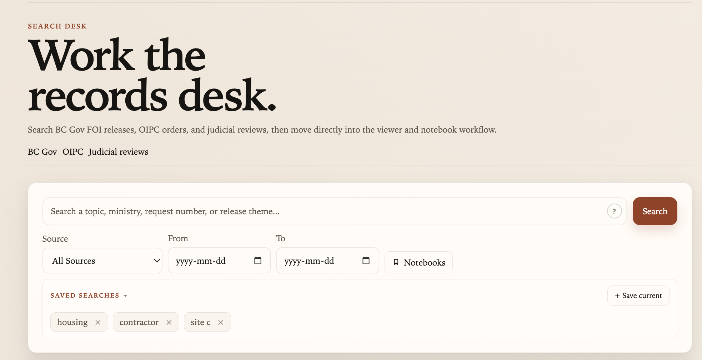

Live betaTransparencyBC
FOI search platform with AI-assisted summaries, OCR-backed document processing, and full-text search across public-records material. Demo login available.
- Full-text search across FOI document corpus
- AI-generated summaries per document
- OCR pipeline for scanned records
Python · TypeScript · React · PostgreSQL · Typesense